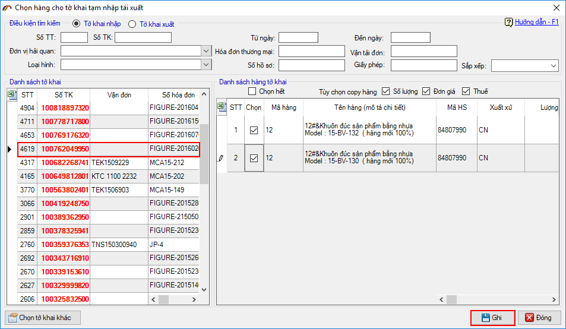

HƯỚNG DẪN NHẬP THÔNG TIN CƠ BẢN


Ngoài ra bạn có thể nhấn vào nút có dấu (…) hoặc nhấn phím F3 để tìm và chọn loại hình cụ thể

Cách chọn này sẽ áp dụng tượng tự đối với các danh mục khác từ hệ thống danh mục cũ như: Mã cảng địa điểm, cơ quan hải quan…
Cơ quan hải quan: chọn đơn vị hải quan khai báo, bộ mã đơn vị hải quan cũng được đổi mới ví dụ mã đơn vị hải quan Đầu tư gia công hải phòng trên hệ thống điện tử hiện tại là P03A thì trên hệ thống vnaccs là 03PA, các đơn vị hải quan khác bạn có thể chọn từ danh mục mà chương trình đã chuyển đổi sẵn.
Mã phân loại hàng hóa: Tùy theo tính chất hàng hóa đang nhập mà người khai tiến hành chọn các mã tương ứng trong danh sách, lưu ý đối với mã phân loại là 'J – Hàng khác theo quy định của chính phủ' thì chỉ khi có văn bản của Chính phủ, các cơ quan nhà nước người khai mới được chọn, trong trường hợp hàng hóa không thuộc loại nào có trong danh sách thì người khai bỏ trống chỉ tiêu này.
Số tờ khai tạm nhập tái xuất tương ứng: Người khai chỉ nhập vào chỉ tiêu này khi tờ khai đang khai có mã loại hình được chọn là loại hình tái nhập, với các loại hình khác thì không được nhập. Bạn nhập vào số tờ khai tạm xuất ( đã được thông quan trước đó) của lô hàng bạn sẽ tái nhập trên tờ khai đang khai này. Đồng thời khi nhập chi tiết hàng tái xuất trên danh sách hàng tờ khai cần chỉ rõ số dòng hàng tương ứng trên tờ khai tạm xuất đã chọn. cụ thể cách nhập như sau:
Thứ nhất: tại ô mã loại hình bạn chọn loại hình tái nhập, ví dụ G11 – Tái nhập hàng kinh doanh TNTX.
Thứ hai: tại ô số tờ khai tạm nhập tái xuất , bạn nhấn vào nút có dấu (…), màn hình chọn hiện ra như sau.
